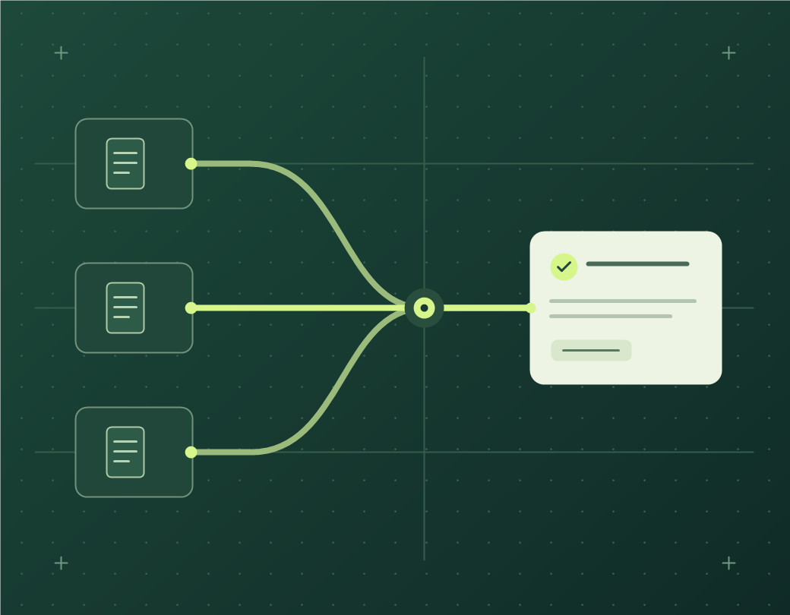

Agenți AI pentru echipă
Microsoft Copilot Studio
Răspunsuri la întrebări recurente, din procedurile și ghidurile pe care le alegem împreună. Testăm sursele și limitele înainte de predare.
Discută un pilot AIPreview pentru review și redesign. Identitatea vizuală și numele actual sunt respinse și urmează să fie înlocuite. Site-ul nu este lansat comercial. Nu trimite date reale pentru testare.
Sari la conținutConfigurăm agenți AI în Microsoft Copilot Studio care răspund la întrebările echipei din documentele aprobate și indică sursa.
Ce include pilotulUn proces intern, întrebări de test și un ghid pentru echipă.Lucrezi direct cu profesioniști cu experiență.

Instrumentele cu care lucrăm
Încearcă trei întrebări din munca de zi cu zi. Vezi și ce se întâmplă când agentul nu găsește informația.
Cum trimit o factură spre aprobare?
Răspuns cu sursă
Conform procedurii demonstrative de achiziții:
După verificare, responsabilul actualizează statusul cererii.
Fragment din documentul fictiv
Ce întrebare primește echipa ta în fiecare săptămână?
Propune un caz pentru pilotPornim de la munca pe care o repeți. Alegem instrumentul după proces, oamenii care îl folosesc și rezultatul pe care îl vrei.
Microsoft Copilot Studio
Răspunsuri la întrebări recurente, din procedurile și ghidurile pe care le alegem împreună. Testăm sursele și limitele înainte de predare.
Discută un pilot AIPower Automate
De exemplu, o cerere de achiziție ajunge la persoana care o aprobă, iar solicitantul primește o actualizare.
Discută un flux de lucruFișiere și date recurente
De exemplu, centralizezi fișierele regionale într-un singur raport lunar, cu verificări înainte de livrare.
Discută un raport ExcelLucrezi direct cu profesioniști cu experiență. Alegem împreună un proces cu întrebări recurente, cum ar fi aprobarea facturilor.
Alegem procesul, utilizatorii pilotului și documentele din care agentul poate răspunde.
Verificăm răspunsurile și sursele pentru întrebările agreate. Testăm și ce face agentul când informația lipsește.
Primești agentul configurat, rezultatele testelor și un ghid scurt. Îi arătăm echipei cum să îl folosească.
Întrebare: Cum trimit o factură spre aprobare?
Ce verificăm: Agentul redă pașii din procedură și indică secțiunea folosită. Dacă nu găsește informația, semnalează lipsa ei.
Încearcă scenariul cu facturaPrimești o ofertă după discuția inițială. Ea separă costul implementării de licențe, consum și suport.
Discută un pilot AICe stabilim înainte să construim.
Estimarea depinde de surse, acces, integrări și scenariile de test. După discuția inițială, îți propunem un scop, livrabile, un calendar și un cost.
Depinde de configurația proiectului și de licențele existente. Verificăm cerințele pentru Copilot Studio, canale și integrări înainte să aprobăm soluția.
Stabilim ce documente sunt necesare și cine trebuie să le poată accesa. Verificăm permisiunile și comportamentul agentului în configurația proiectului înainte de extinderea către echipă.
Definim și testăm situația. De exemplu, agentul poate spune că nu găsește o sursă și poate indica persoana potrivită. Evaluăm și răspunsurile greșite.
Primești livrabilele agreate, un ghid scurt și o prezentare. Documentăm sursele, limitele cunoscute și ce am testat. Suportul ulterior se stabilește separat.
Spune-ne ce face echipa acum și unde se pierde timp. Pornim de la o întrebare, un raport sau un pas repetitiv.